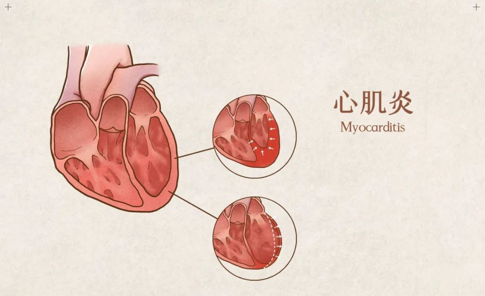

人工髖關節置換術手術前後照護

【本篇學習重點】
1. 心肌炎在疾病初期會有類似感冒及腸胃症狀。
2. 治療方式可以使用藥物或手術治療。
3. 預防感染及提升免疫力，是居家保健原則。
一、什麼是心肌炎：？
是指心肌受到病毒、細菌或毒素侵犯，引起心臟發炎。
二、心肌炎常見的症狀：
心肌炎常出現發燒、咳嗽、喉嚨痛、嘔吐、腹瀉、肌肉酸痛、疲倦、胸痛、心律不整等，疾病初期的表現類似感冒及腸胃症狀容易被忽略，若沒有及時處理，有可能會導致心臟衰竭。如有上述症狀並不一定是心肌炎，若您有上述症狀，請至心臟科門診就醫。
三、常見的治療方式：
1. 藥物治療：醫師會先給予抗病毒藥物治療，若是細菌感染則會加上抗生素使用；當出現心衰竭的症狀時，醫師會視情況加入強心劑或是血壓藥來治療。
2. 手術治療：當藥物無法改善心臟衰竭時，醫師會視情況使用葉克膜，或是左心室輔助器來幫助病人，嚴重時甚至會採取心臟移植。